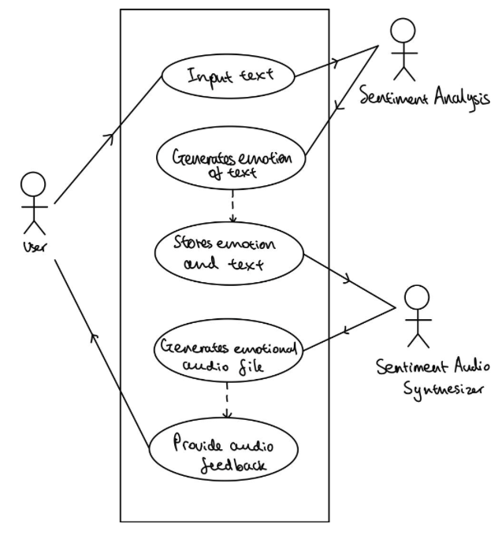

Requirements
Project
Requirements
Background
At any given time, more than 5000 adults in the UK suffer from motor neurone disease. The defining feature of this disease is the loss of motor functions. This means that through the progression of the disease, one will not only lose the ability to walk or move, but also to speak by themselves. While technology exists to restore speech digitally, it often fails in terms of financial accessibility, ease of use and lack of a personal touch. Moreover, the efforts don't always lead to a satisfactory result as the voice produced by some existing TTS systems is robotic and does not enable emotional variation.
Project Goals
Our project goal is to make use of machine learning to enable effective communication for our users. This will be done by working on the following goals:
- Synthesise audio with 7 different emotions via a text-to-speech system
- Create an offline model to be deployed with an intuitive UI that is disabled-friendly
- Ensure smooth integration with the other team during the process of receiving generated texts
Requirements Gathering
We held a meeting with the client to collect requirements for the system. In this meeting, we developed context for the problem statement and an understanding of the qualitative requirements for the system. We were presented with a very specific goal regarding the emulation of 7 different emotions through synthesised speech: joy, sadness, netural, anger, disgust, surprise and fear.
We also conducted secondary research to find requirements to better design the system keeping user needs in mind. This revealed the difficulty users have navigating existing systems and helped us ensure we design our model keeping restricted movements and improved quality of communication in mind.
Personas
We made use of the following personas to emulate stakeholders for the system. We decided on the personas of a MND patient and a family member of the MND patient to get a better understand of user needs.
Persona 1
Bobby is in bed surrounded by medical equipment assisting his life processes. His children Hope and Mark are sitting near his bed. They are trying to converse with him but are visibly fidgety at the time it takes to reply and the lack of emotion in the voice. They want to make their time together as enjoyable and meaningful as possible despite Bobby’s difficulties with physical movement.

Persona 2
Hope, a full time cardiologist, is living with her parents to maximize the time she can spend with her father, Bobby, who has been diagnosed with Motor Neuron Disease. After a long day at work, she is unable to converse with him as she usually did. She is emotionally distressed by her father's inability to move or communicate effectively, which has strained their relationship. Hope is determined to find a way to reconnect with her father emotionally and restore his ability to convey his sense of humor and emotions.

Use Cases
Below shows the use case diagram and use case list, which shows the user's interactions with the application
Use Case Diagram

Use Case List
| Use Case | Purpose |
|---|---|
| User types in text in the text box | This will be the text utilised in sentiment analysis and emotional audio generation | Click the 'smart generate' button | This will perform sentiment analysis on the text to determine the concluded emotion to generate the audio |
| Click the dropdown select box to select 7 different emotions | This will allow the user to select and store selected emotion in a Streamlit session state, which is used in the manual audio generation function |
| Click the 'manual generate' button | This will generate the emotional audio based on the text and the selected emotion from the select box |
| Click the 'play audio' button | After the emotional audio has been generated, it will play the audio back to the user |
MoSCoW List
Below shows the MoSCow list for functional and non-functional requirements. These include must have, should have and could have functionalities of the application.
Functional Requirements
| ID | Features | Priority |
|---|---|---|
| 1 | Accurate sentiment analysis of text | Must |
| 2 | Accurate emotional audio generation | Must |
| 3 | Ensure that the frontend is implemented properly by sending the correct information | Must |
| 4 | Use multiple sentiment analysis models to create a scoring system | Should |
| 5 | Reusing previously generated audio files if they have the same text and emotion as the current input | Should |
| 6 | Allow the user to select an emotion to synthesise their text | Should |
| 7 | Eye-tracking UI | Could |
Non-functional Requirements
| ID | Features | Priority |
|---|---|---|
| 8 | Comprehensive testing for all models used | Must |
| 9 | Easy to use and intuitive GUI | Must |
| 10 | Ability to integrate with the other text-generation team through creating a connection point to receive the text to analyse | Must |
| 11 | Deployable as an offline system | Should |
| 12 | The system should run on multiple different OS | Should |
| 13 | Documentations for all code | Could |
| 14 | Have complete code coverage when testing | Could |
| 15 | Train the ML models further with datasets | Could |